01 · Lago · Arelauquen · Bariloche
El Nahuel Huapi desde el agua: bahías, islas y calas turquesa a las que no llega ningún camino.
La experiencia
Salimos en nuestra lancha privada, con capacidad para hasta seis personas, y dejamos atrás el ruido del centro. En pocos minutos el lago se abre en brazos y bahías que solo se conocen navegando.
El recorrido se arma según el día y el grupo: una cala de agua turquesa para nadar, una playa escondida para un picnic, o simplemente apagar el motor y escuchar el silencio de la cordillera. Mientras tanto, el dron registra la salida desde el aire para que te lleves las fotos y los videos.
No hay dos salidas iguales. Si el viento acompaña cruzamos a las islas; si el lago está planchado buscamos las calas del brazo norte, donde el agua se pone transparente y las montañas se reflejan enteras. Cerramos siempre con el atardecer sobre la cordillera. Y si te gusta pescar, sumá la pesca con mosca como adicional por persona.
Desde el aire y desde el agua
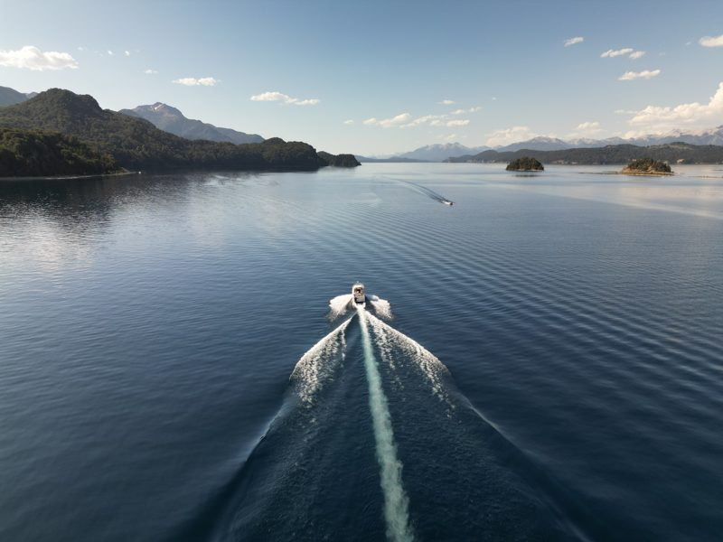
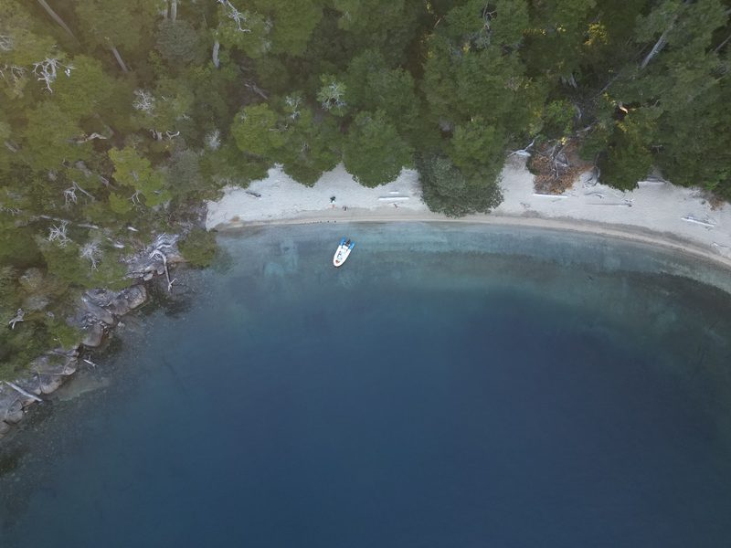
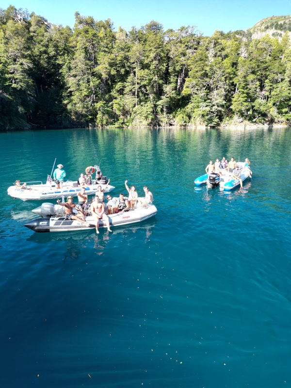
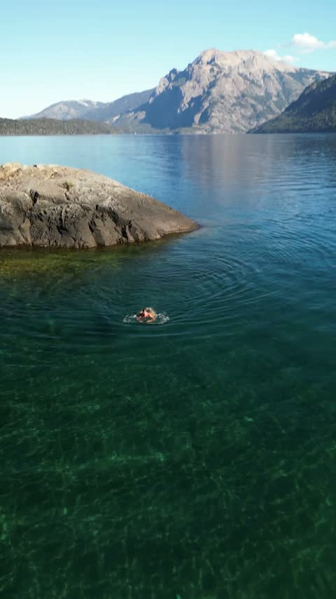
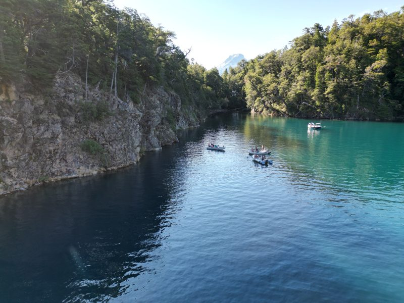
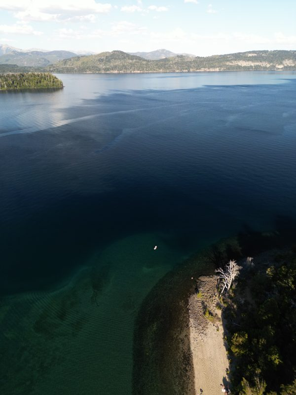
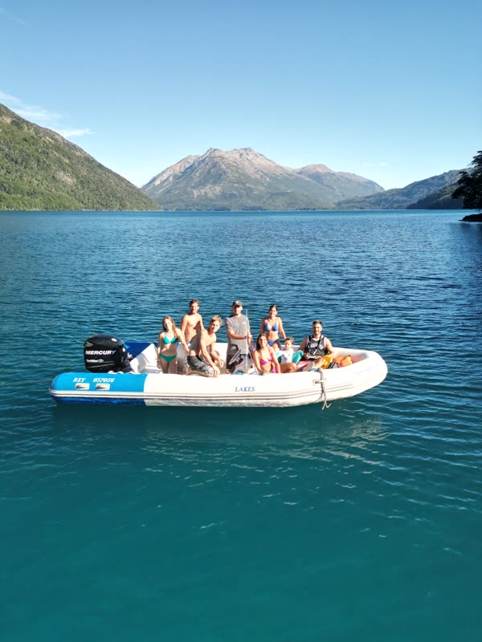
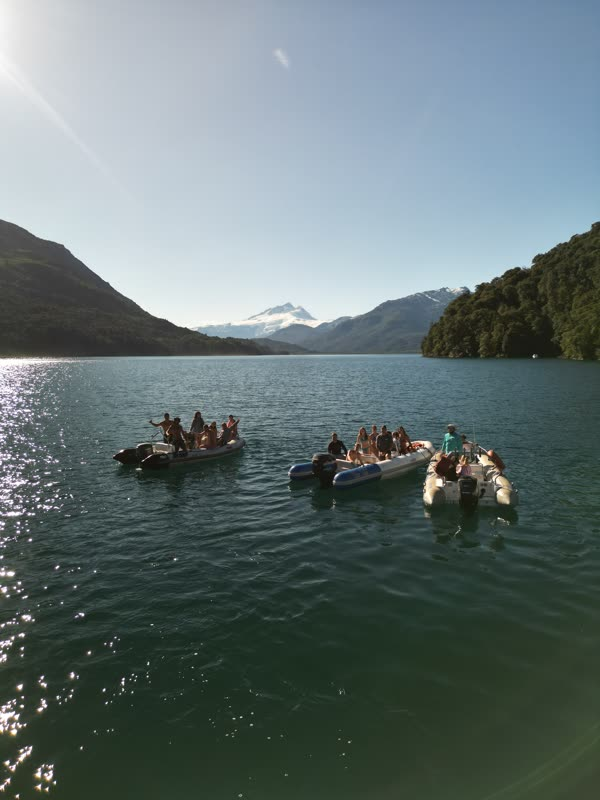
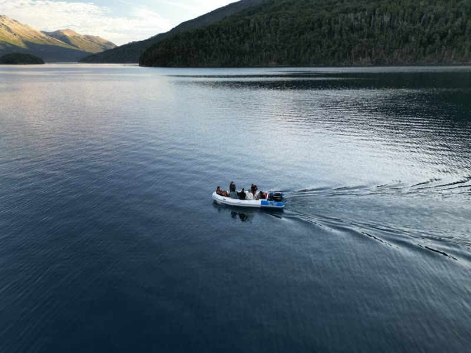
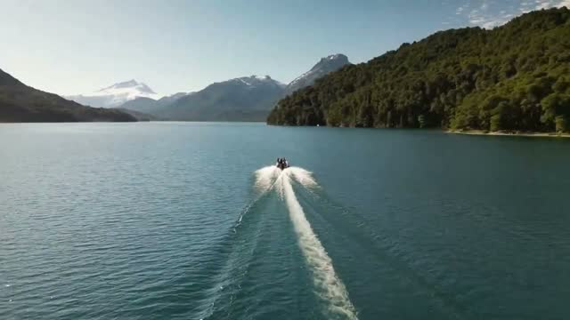
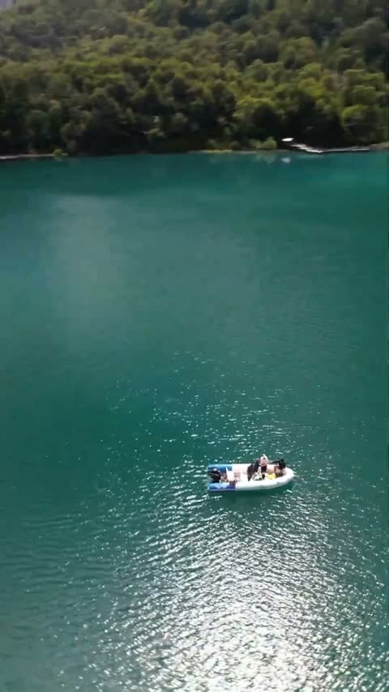
Seguí explorando
Hablemos
Contanos en qué fechas venís y cuántos son. Te respondemos en el día por WhatsApp con disponibilidad y precios.